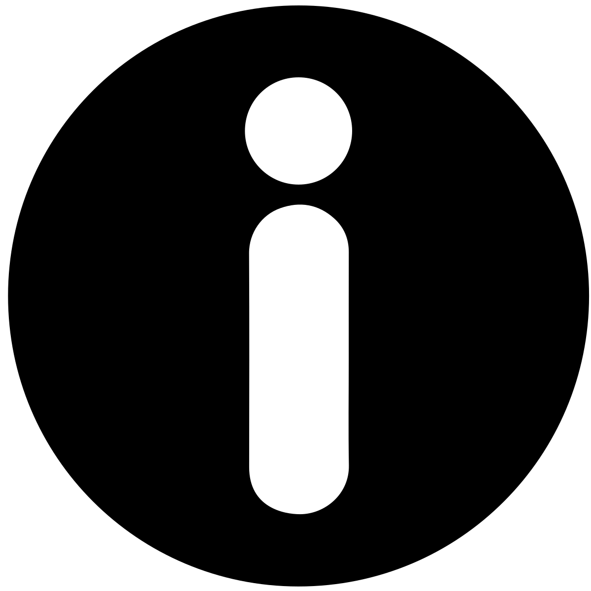
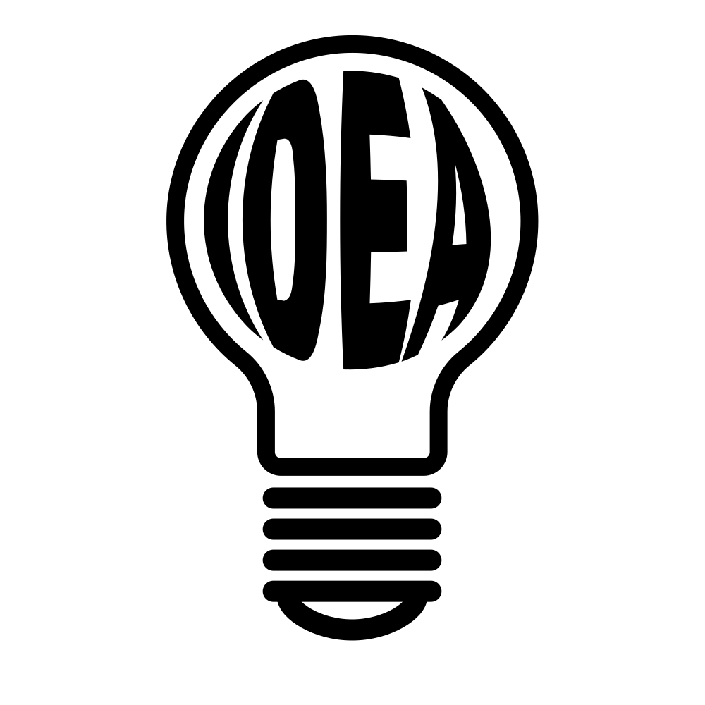
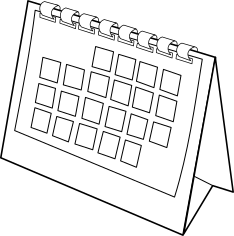
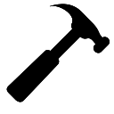
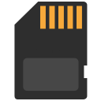

En esta página vamos a publicar todos los documentos de las tareas del proyecto de creación de nuestro seguidor solar que hemos hecho en la materia de "Tecnología y Digitalización" de tercero de ESO.
Los autores de este proyecto son:
- Alina Leppenen
- Alba Pérez
- Fátima Rosauro
- Chams Doha




